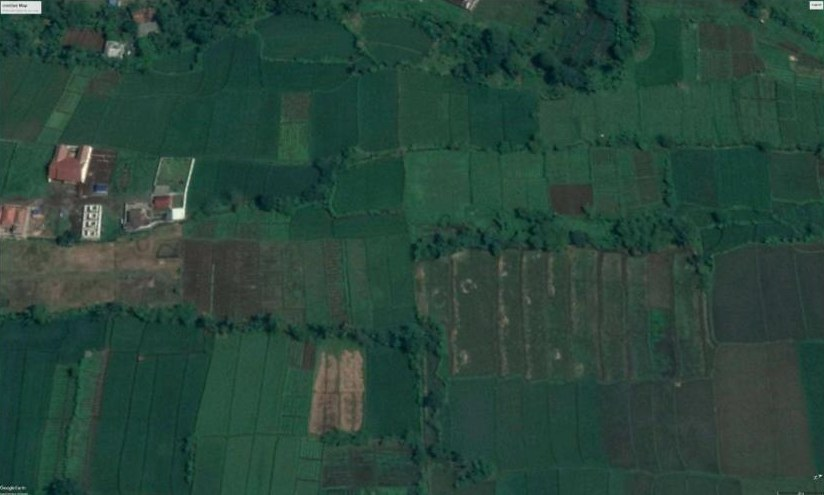
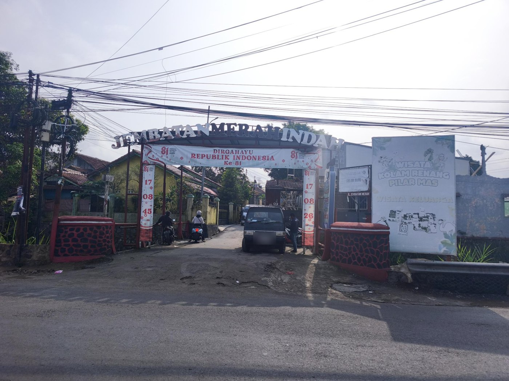
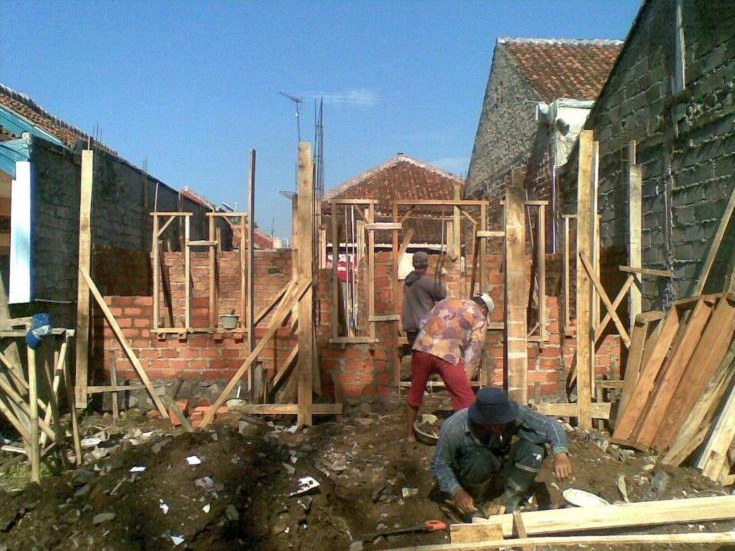
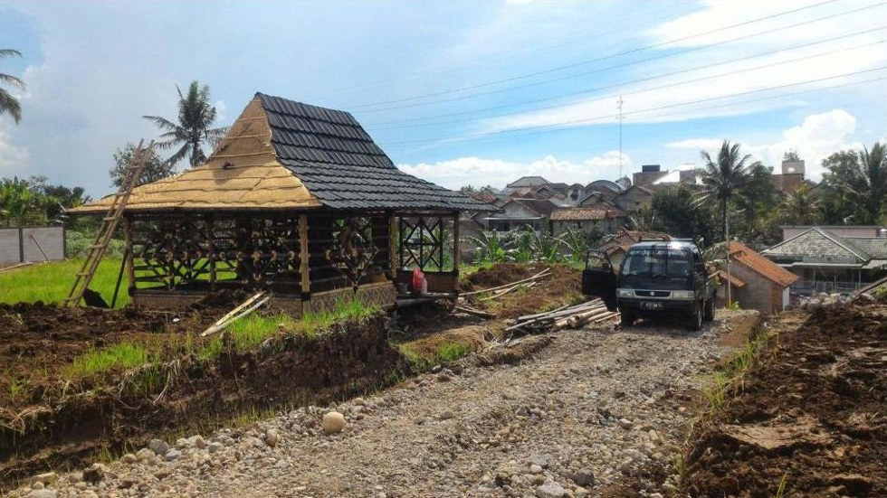

Kavling siap bangun di Kota Sukabumi, terima beres sampai SHM atas nama Anda. Survei, akta jual beli di notaris/PPAT, hingga balik nama sertifikat, semuanya kami urus. Mau sekalian dibangunkan rumahnya? Bisa.
PT Exres Jati Manggung mengembangkan dan menjual tanah kavling sejak 1998, dengan opsi pembangunan rumah sesuai kebutuhan pembeli. Kami melayani pengusaha dan profesional yang menginginkan aset tanah dengan status jelas dan proses yang lugas.
Kawasan yang sedang kami kembangkan, langsung di atas citra satelit. Klik blok untuk melihat luas, kondisi, dan tanyakan kavling yang masih tersedia di blok itu.
Siteplan kavling Limusnunggal, citra kawasan sebelum dan sesudah dikembangkan, serta dokumentasi pekerjaan lapangan.

Sebelum membayar, Anda melihat sendiri sertifikat dan siteplannya. Setelah itu seluruh proses legal kami kerjakan sampai tuntas: akta jual beli di notaris/PPAT, balik nama di Kantor Pertanahan, hingga sertifikat SHM atas nama Anda kami serahkan. Anda tidak perlu bolak-balik mengurus sendiri.
Kantor PT Exres Jati Manggung berada di Kp. Baru Kapling, Limusnunggal, di kawasan Jembatan Merah Indah, dekat Djembatan Merah yang jadi patokan warga Sukabumi. Dari sini kami mengembangkan kavling dan rumah di kawasan sekitarnya, hingga Pesona Limusnunggal sekitar 1,5 km ke arah timur laut.



10 kawasan dengan total luas ± 41 ha, semuanya di Kota Sukabumi dan bisa Anda kunjungi. Luas diukur dari batas kawasan di citra satelit.
Belum terjawab? Tanyakan langsung, kami balas lewat WhatsApp.
Tanya via WhatsAppHarga berbeda per blok, posisi, dan ukuran kavling. Kirim pesan WhatsApp, kami kirimkan daftar kavling yang masih tersedia beserta ukuran dan harganya.
Bisa, dan memang itu yang kami sarankan. Jadwalkan survei, kami temani ke lokasi dan tunjukkan sertifikat serta siteplannya sebelum Anda mengeluarkan uang.
Cash keras atau bertahap sesuai kesepakatan. Setelah memilih kavling, Anda membayar tanda jadi untuk mengunci kavling, lalu pelunasan dan akta jual beli di notaris/PPAT. Proses balik nama sampai SHM terbit atas nama Anda kami urus seluruhnya.
Kami. Mulai dari akta jual beli di notaris/PPAT sampai balik nama di Kantor Pertanahan, semuanya kami kerjakan sampai beres. Anda cukup hadir untuk tanda tangan, lalu menerima sertifikat SHM atas nama Anda.
Bisa. Selain kavling, kami melayani pembangunan rumah di atas kavling Anda sesuai kebutuhan dan anggaran.
Kami beroperasi sejak 1998 dan sudah mengembangkan 10 kawasan di Kota Sukabumi dengan total luas sekitar 41 ha. Semua lokasinya ada di peta di halaman ini dan bisa Anda datangi.
Cocokkan nomor sertifikat di aplikasi Sentuh Tanahku (Kementerian ATR/BPN) atau tanyakan ke Kantor Pertanahan Kota Sukabumi. Penandatanganan akta dilakukan di hadapan notaris/PPAT.
Kp. Baru Kapling, RT.03/RW.12, Limusnunggal, Kec. Cibeureum, Kota Sukabumi 43165, di kawasan Jembatan Merah Indah. Telepon 0858-6437-6785.
Minta lihat sertifikat asli, cocokkan nama pemilik, luas, dan batasnya dengan kavling di lapangan. Nomor sertifikat bisa dicek di aplikasi Sentuh Tanahku atau Kantor Pertanahan.
Baca artikel →SHM (Sertifikat Hak Milik) adalah hak terkuat dan tidak berjangka waktu. HGB (Hak Guna Bangunan) berjangka waktu dan perlu diperpanjang. Untuk rumah tinggal, SHM paling umum dicari.
Baca artikel →Tentukan desain dan anggaran, urus Persetujuan Bangunan Gedung (PBG) di pemerintah kota, lalu mulai pembangunan. Kami bisa mendampingi dari desain sampai serah terima.
Baca artikel →Isi nama dan tanggal yang Anda inginkan, lalu kirim lewat WhatsApp. Tim kami membalas untuk mengatur jam dan titik temu. Atau telepon langsung 0858-6437-6785.